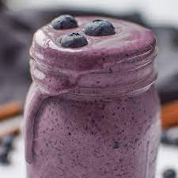

Berry Peanut Butter Smoothie

Description
Fruit can be a very important part of a balanced diet,
and what better way to get those antioxidants than in a
blended smoothie? That's why here in this recipe, we offer
you the most delicious smoothie we have ever blended!
Ingredients
- 4 frozen strawberries
- 8 frozen blueberries
- 1/2 frozen banana
- 5 frozen leaves of spinach
- 2 tbsp sugar
- 4 tbsp peanut butter
Steps
- Add frozen strawberries, blueberries, banana, and spinach to a blender
- Sprinkle 2 tbsp sugar over the frozen fruits and veggie
- Add 4 tbsp peanut butter to the blender
- Blend ingredients together to get desired consistency
- Top with 3 blueberries